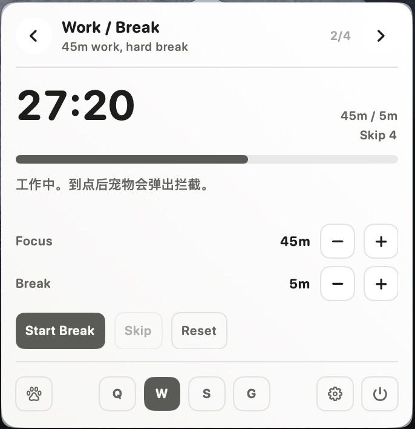

Vibe coding guard
Navi catches the work you forget.
Long coding runs make posture, breaks, and small daily tasks disappear. Kaji keeps them close without turning into a dashboard.
45mNavi reminds you to stand up before your back complains.
2mBreaks can become a full-screen pause with Skip still available.
GoalIf today’s tasks are unfinished, Navi keeps them visible at the right moment.

Install
One command.
curl -fsSL https://raw.githubusercontent.com/MisterBrookT/kaji/main/install.sh | bash